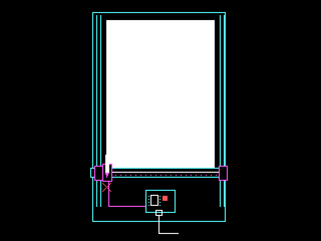

Setup
1. Draw a line on screen
Save this as index.html and open it through localhost or HTTPS.
index.html
<!DOCTYPE html>
<html lang="en">
<head><meta charset="UTF-8"><title>My pen drawing</title></head>
<body>
<canvas id="preview" width="600" height="400"></canvas>
<script type="module">
import { PlotterEngine } from "https://cdn.jsdelivr.net/gh/seb-prjcts-be/vanilla.penplotter@4880b41b911ede36b391e2924a4949b27bdb2378/vanilla.penplotter.js";
const plot = new PlotterEngine({
units: "mm", page: { width: 120, height: 80 }
});
plot.line(12, 12, 92, 12);
const canvas = document.getElementById("preview");
plot.drawRoute(canvas.getContext("2d"));
</script>
</body>
</html>You should see one line. Its coordinates are in millimetres; its length on paper will be 80 mm.
2. Plot a small drawing
Use Chrome or Edge. Connect the plotter by USB and switch it on.
Put the pen at the starting corner
On my iDraw HSE / A2, the starting corner is bottom left when the long rails run away from you. With the motors off, move the carriage there. The machine does not find that point automatically.

Use the example panel
Open the frame and wave example. Its panel supplies the connection and plotting buttons.
- Choose the format of the paper already on the machine. Set X and Y to its corner's distance from the starting point. If needed, turn the sheet in the preview to match its orientation.
- Check that the drawing is on your paper in the bed preview. Changing the paper format keeps the drawing the same size.
- Click Dry run. The log should say
complete; the machine stays still. - Click Connect plotter, select the port and click Connect.
- Click Plot and confirm. The pen draws the frame and wave, then returns to the starting corner.
The frame should measure 40 × 25 mm. Click Stop to stop a plot. After a stop or error, switch off the motors and return the carriage to the starting corner before trying again.
The driver here is tested on the iDraw HSE / A2. A different machine needs its own checked profile and starting directions.
If it does not work
- No line on screen: check the browser console and whether the import loaded.
- No port list: open the page in Chrome or Edge on HTTPS or localhost.
- The panel refuses the placement: check the paper format, turn and X/Y values against the bed preview.